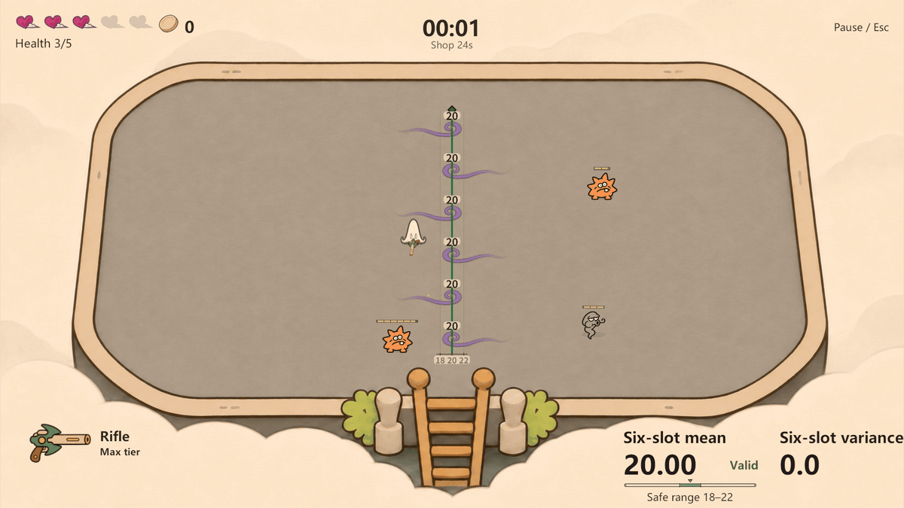
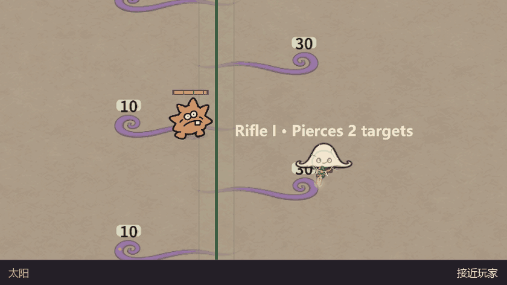
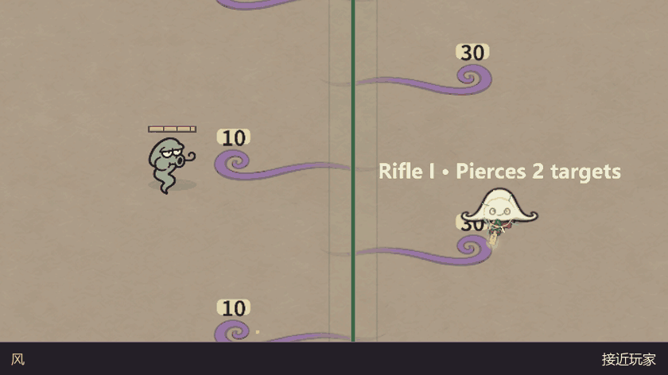
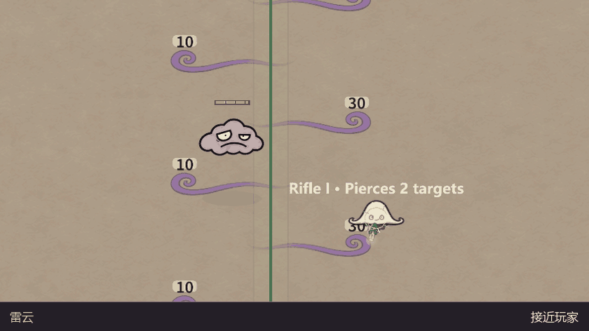
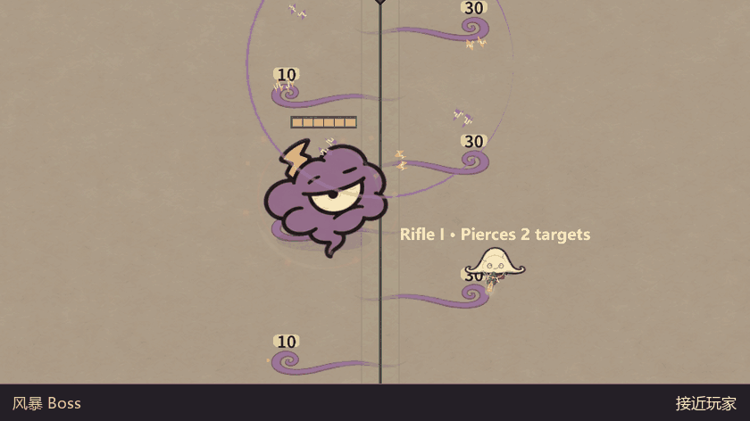
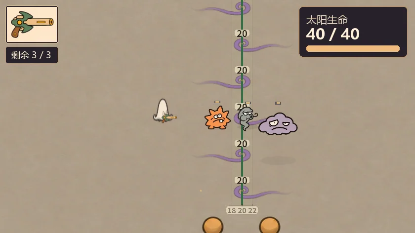
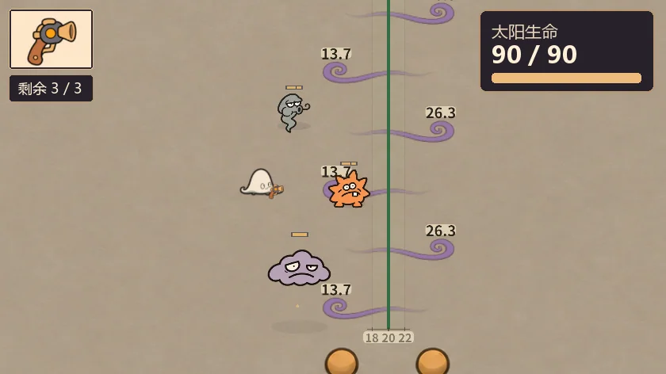

StatsShooter.
让均值决定开火，让方差塑造武器。
在这款 2D 俯视角肉鸽射击游戏里，每次命中都会更新一格数据。玩家一边躲避天气敌人，一边校准均值、用卡牌改变取数方式，逐步构筑出不同的武器。
探索核心机制Combat Rules
战斗规则
命中改变样本，均值控制直伤。战斗时，玩家要判断何时继续射击、何时校准。
战斗与补给
击败敌人获得金币。补给倒计时结束后，进入商店购买升级。
六个观测值
每轮命中替换一格观测值，打空时六格保持原样。
移动与射击
WASD 移动，鼠标瞄准，按住左键射击。
均值维持在 18–22
均值是六格观测值的平均。只有在有效区间内，普通射击才有直伤。
方差决定武器档位
方差衡量数据有多分散。低方差强化步枪贯穿，高方差扩大霰弹覆盖。
右键校准
按下右键，系统修正一格，让均值尽量接近 20。
试一次校准
当 40 替换掉一个 20，六格均值升高约 3.3。选择下面的步骤，观察后续火力如何变化。
均值 20.0
均值有效，可以正常射击。
Upgrade Shop
升级商店
击败敌人获得金币。补给倒计时结束后进入商店，购买卡牌、补给或刷新选项。
Statistical Cards
四个槽位，换掉哪张？
你的步枪已经是Ⅲ档，四个槽位也满了。要装入「贯穿回响」，你会舍掉压低波动的卡，还是贯穿返金币的卡？
当前卡槽 4 / 4
- 精密采样
- 八次平均
- 中心收缩
- 贯穿赏金
预计方差是持续取样的长期参考。换卡后，旧数据会在命中时逐格替换。
步枪 Ⅲ档
最多贯穿 3 敌，贯穿不减伤
- 19.375
- 20.625
- 19.75
- 20.25
- 19.875
- 20.125
当前均值 20.00
当前方差 0.156
预计六格方差 0.156
均值有效区间 18–22。Ⅲ档进入 ≤ 0.30，退出 > 0.45。
选择要换掉的卡。两种换法从同一组六格数据出发。
使用固定取数演示两种换法。每次命中只更新一格。
Character & Enemies
小高斯与天气敌人
小高斯的外形让玩家看见分布的变化。天气敌人分别干扰走位、取样与校准时机。
方差越大，小高斯越矮宽

每次命中会更新六格中的一个观测值。小高斯的身形随方差变宽、变矮，碰撞范围保持一致。
天气敌人

太阳
持续追击，让均值出界后的火力中断带来生存压力。

风
把一格样本推离均值，可能使均值出界，也可能帮助霰弹升档。

雷云
短暂锁住校准，玩家需要提前安排修复数据的时机。

风暴 Boss
改写一格数据。玩家要救回均值，同时维持构筑所需的方差。
低方差与高方差构筑
均值维持在 18–22 时，六格的实际方差决定武器档位。步枪靠集中取数获得贯穿，霰弹枪靠分散取数扩大火力覆盖。

方差降低，贯穿增加
方差降至 60、12、0.30 时依次升档。Ⅰ档能打穿两名敌人，Ⅱ档增至三名，Ⅲ档让三名敌人都受到全额伤害。
让取数集中在 20 附近
精密采样收窄范围，八次平均将八个取数合为一个观测，中心收缩将结果到 20 的距离减半。集中校准可在战斗中修复均值并压低当前方差。
稳定性、射速与卡槽
其余卡牌相同时，八次平均换成六十四次平均，新取数的理论方差由 0.188 降至 0.023，射速约慢 26%。若只带六十四次平均和中心收缩，还可留两个槽位给贯穿赏金和贯穿回响。

从扇射到环射
基础为五弹扇射。方差达到 140、240、360 时依次升为七弹、九弹、二十五弹，Ⅲ档可向四周环射。
让样本分布在两端
两端采样让观测靠近 0 或 40，尾部概率提高取到端点的机会。保差校准可修复出界的均值，也可在均值有效时拉大方差。
覆盖与集中命中
重心震爆要求一轮命中至少三名敌人，集中重击要求同一目标吃到至少 60% 的弹丸。广域散射使Ⅲ档由 25 增至 37 弹，集中重击所需命中数随之由 15 增至 23。
固定两端采样Ⅱ和尾部概率Ⅲ时，将极值筛选换成广域散射，会使新取数的理论方差由 399.2 降至 384.7，Ⅲ档同时多出 12 颗弹丸。
校准触发分身
本局达到过Ⅲ档即可购买同步分身。均值从界外回到有效区间，且方差仍至少为 350 时，本体和已有分身各生成一只分身，受容量限制。
相同的均值，两种打法
查看构筑细节点燃构筑的成型终局
高方差霰弹和极值分身同时开火。火种在同一敌人身上叠加，留在地面的余烬继续点燃经过的敌人。
成型后的打法
先用环射把火带进敌群，再利用地火持续扩散。多个分身打中同一目标时，各自的燃烧独立生效。
终局演示的四槽配置
火花、余烬播撒、余烬复燃和烈性火种各占一格。极值分身单独升级，均值回到有效区间且方差达标时能继续增殖。
点燃构筑的四个强化阶段
向下滚动，或选择一个阶段。
-
火花
霰弹命中会点燃敌人。均值出界时，已有燃烧继续生效。
-
余烬播撒
落地弹丸和移动中的燃烧敌人留下地火，经过的敌人也会被点燃。
-
余烬复燃
地火半径从 0.8 扩大到 1.2，持续时间从 2.2 秒延长到 4 秒。
-
极值分身
本体和分身可对同一个敌人分别施加火种，让燃烧叠加。
校准、卡槽与玩家选择
系统选槽，玩家决定时机
首轮试玩中，敌人一多，玩家忙于走位和连射，来不及比较候选。改为自动选槽后，仍有人反复按右键。我加入下一发的预计均值和伤害。自动测试已确认预览与结算一致，玩家能否据此判断校准时机仍待试玩检验。
数据卡和战斗卡共享四槽
装入贯穿回响时，换掉八次平均会让预计六格方差由 0.156 升至 1.25。换掉贯穿赏金可以维持原有方差预测，但会失去贯穿返金币的效果。
设计反思
从终局反推帮助我明确成型体验，也容易把成长压成一条预设路线。玩家在开局选定稳定或高方差后，后续多在补齐同一套卡，稳定路线成型较快，调整打法的机会更少。统计学习需要进入选牌、换卡和校准这些具体决策。